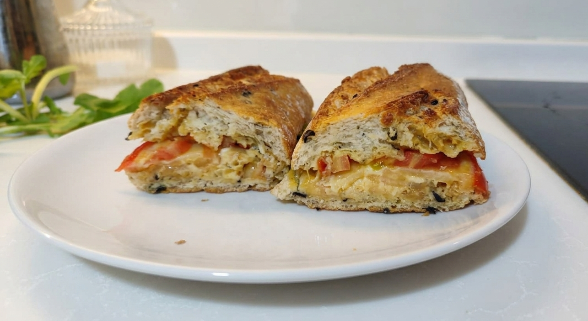

Rokforun keskinliği, Gouda'nın gövdesi ve eski kaşarın yoğunluğuyla, tavada kapak altında pişen sofistike bir lezzet şöleni.

| Bileşen | Miktar | Kalori (kcal) | Protein (g) | Tuz (g) |
|---|---|---|---|---|
| Ekşi Mayalı Baget | 70g | 190 | 6.0 | 0.8 |
| Gouda Peyniri | 30g | 110 | 7.5 | 0.4 |
| Eski Kaşar | 30g | 120 | 8.5 | 0.5 |
| Rokfor Peyniri | 15g | 55 | 3.2 | 0.5 |
| Tereyağı | 20g | 145 | 0.1 | 0.2 |
| Zeytinyağı | 7g | 60 | 0.0 | 0.0 |
| Bal | 10g | 30 | 0.0 | 0.0 |
| Hardal | 10g | 7 | 0.3 | 0.2 |
| Domates | 40g | 10 | 0.5 | 0.0 |
| TOPLAM | - | 727 | 26.1 | 2.6 |
Gurme Yorumu: Rokforun keskin küf notaları, bal ve limonun asiditesiyle dengelenerek Gouda ve eski kaşarın fındıksı yapısıyla harika bir uyum sağlar. Sağlık Yorumu: Protein açısından zengin bir öğün olmasına rağmen tuz içeriği yüksektir. Peynirlerin doğal sodyum değeri baskın olduğu için ekstra tuz eklenmemesi önerilir. Düşük glisemik indeksli tam tahıllı ekmek kullanımı tavsiye edilir.